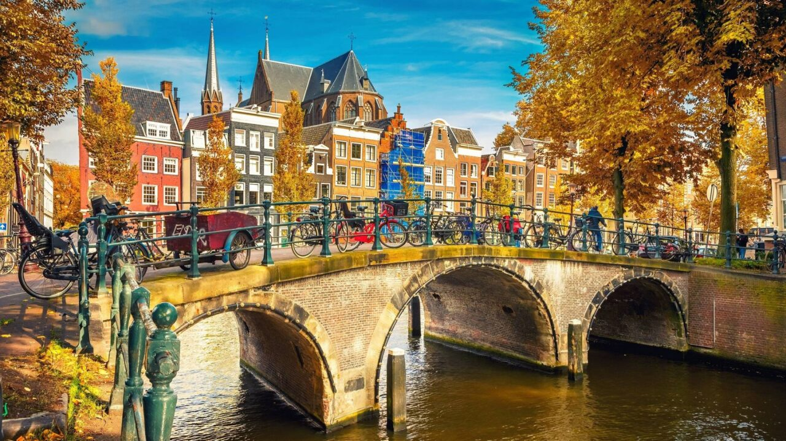
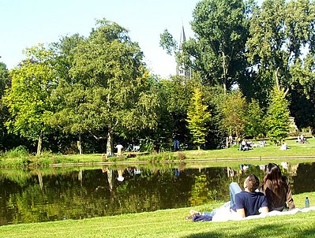

Het Rijksmuseum in Amsterdam is een van de zestien rijksmusea in Nederland. De collectie biedt een overzicht van de Nederlandse kunst en geschiedenis met onder andere werken van
17e-eeuwse Nederlandse meesters als Rembrandt, Vermeer en Hals. Het museum is sinds 1885 gevestigd in het Rijksmuseumgebouw dat ontworpen werd door de Nederlandse architect Pierre Cuypers.
De kunstverzameling die de stadhouderlijke
familie door de eeuwen had opgebouwd vormt de basis van de collectie van het Rijksmuseum.
Het Vondelpark is een langgerekt stadspark in Amsterdam, daterend uit 1865. Het park ligt in het stadsdeel Amsterdam-Zuid, op de grens met het stadsdeel Amsterdam-West en ten zuidwesten van de Amsterdamse
grachtengordel.
Het strekt zich uit van de Stadhouderskade tot aan de Amstelveenseweg. Bij de opening in 1865 heette het park het Nieuwe Park, in de volksmond Wandelpark. Na de onthulling in oktober 1867 van het Vondelmonument, een standbeeld
ter ere van de dichter en toneelschrijver Joost van den Vondel, werd de naam gewijzigd in Vondelpark.